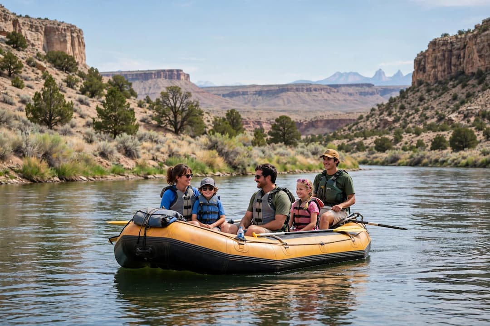

Beginner
Orilla Verde Float
Drift through the peaceful stretch of the Rio Grande Gorge in the Orilla Verde Recreation Area on this relaxing float. Perfect for families with young children, first-timers, or anyone who wants to soak in the canyon scenery without intense rapids. Bighorn sheep and river birds are often spotted along the shore.
- Duration: 2 hours
- Difficulty: Class I–II
- Age Minimum: 5+
- Price: $55 per person